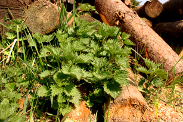

Voici peut-être le champion toutes catégories des légumes sauvages! Par sa facilité d'identification, tout d'abord: il suffit de passer le doigt dessus pour s'assurer qu'on a affaire à la bonne plante. Par sa disponibilité, ensuite: je défie quiconque de ne pas trouver un plant d'ortie dans les 100 mètres autour de son domicile, fut-ce en pleine ville. Enfin, par sa saveur particulière et le nombre d'utilisations possibles.
L'ortie, on s'en doute, ne s'utilisera pas crue. Bien qu'il soit possible, avec beaucoup d'entraînement, de les cueillir à main nue en suivant le sens du poil et d'ensuite les rouler pour casser ces poils urticants et les déguster, l'opération reste risquée et laborieuse. On optera donc sans complexe pour la paire de gants et la cuisson!
Toujours au niveau de la cueillette, j'opte toujours pour la partie terminale de la plante, c'est-à-dire le bourgeon et les 4 premières feuilles. En soi, les autres feuilles sont aussi comestibles, mais, vu l'abondance de la plante, autant s'en offrir la qualité supérieure.
L'utilisation la plus connue de l'ortie, celle-là même qui a presque fait toute seule la renommée de la cuisine sauvage, c'est la soupe. Seule, ou avec d'autres plantes, c'est un must facile à réaliser.
Ensuite, l'ortie peut s'utiliser un peu comme de l'épinard. Cuite à la vapeur, à l'étouffée ou rajoutée dans les lasagnes, par exemple, c'est un excellent légume qui se prête à de multiples expérimentations. Il est même possible d'en faire une étonnante gelée!